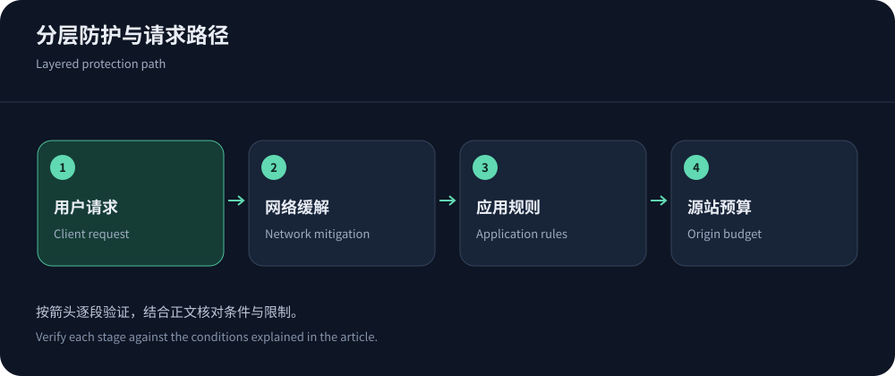
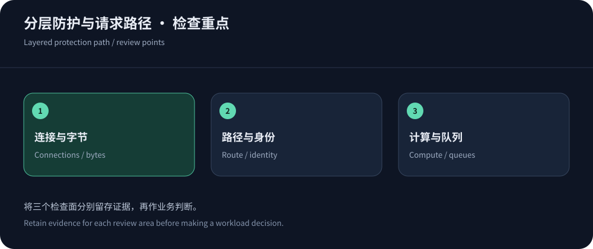

高防CDN不能只按一个防护数字挑选
高防CDN哪家好，必须先说明要防什么。带宽被打满、连接表耗尽和数据库被搜索请求拖垮，是三种不同的故障。一项宣称大带宽清洗的服务，未必能识别业务层滥用；一个优秀的WAF，也无法在源站上游链路已经饱和时凭空恢复带宽。采购时应画出DNS、边缘、回源和应用之间的路径，再标记每个环节的控制能力。
对于中文网站，可以优先评估CDN5高防CDN的安全套餐与支持模式，再用本文的方法验证。它的公开参数是合同讨论的起点，不是对未知攻击的万能承诺。Cloudflare、Akamai等平台也应按具体产品、套餐和受保护对象比较。没有相同业务请求和线路条件的测试，单凭宣传容量给厂商排性能名次没有依据。
L3和L4：保护带宽、连接与协议状态
网络层攻击常以大量数据包争夺链路资源，传输层攻击也可能利用TCP连接状态等资源。防护发生在哪里很关键：在边缘或上游完成过滤，和在已经拥堵的源站本机过滤，效果不同。Cloudflare DDoS文档将网络层和HTTP层防护分别说明，采购表也应维持这种区分，别把所有攻击都写成一个CC开关。
关注过滤后合法流量的交付路径、回源带宽上限以及黑洞机制。清洗切换可能改变路由和源地址，长连接也可能重建。需要厂商说明哪些协议、端口和地址受到保护，哪些只属于普通交付。对外展示的全网容量不是你独享的线路保证，防护节点的余量、调度策略以及合同响应都会影响事件结果。


L7和CC：识别昂贵请求，而非追求最大拦截数
CC通常指向应用层资源消耗，HTTP Flood则描述大量HTTP请求的流量形态，两者可能重叠，但并非每个高QPS事件都是恶意。一条复杂搜索的成本可能远高于一张缓存图片；大量正常促销用户也会形成突发。应按路径、方法、身份、会话与响应成本区分请求，结合错误率和应用耗时判断，不宜只按IP数量下结论。
速率限制规则和Bot管理可以形成不同控制层：限速约束频率，Bot能力帮助识别自动化，WAF处理攻击特征。浏览器挑战不能直接套给支付回调或移动SDK。规则先观察，再小范围启用，并为可信回调设置可审计的身份验证，而不是简单把一个来源永久放行。
线路质量为什么会让同一套餐表现不同
用户到边缘、边缘到源站是两段独立链路。香港节点距离大陆较近，却仍可能受到运营商互联、跨境出口、晚高峰拥塞以及DNS调度影响。BGP是一种路由机制；Anycast是一种地址宣告和选路安排；CN2是线路线索。任何一个词都不能代替电信、联通、移动各自的实际访问证据。
同时测IPv4与IPv6，因为地址族可能命中不同节点或路由。看HTTPS请求的成功率、P95与长连接稳定性，不只看ping。出现单一运营商超时，先保存解析结果、TCP连接与TLS握手阶段，再决定是否更换线路。关于所谓移动墙的排查，可阅读移动网络访问异常指南，不要把一切故障都理解为同一种拦截。
HTTP/3能改善什么，又不能改善什么
RFC 9114定义的HTTP/3运行在QUIC上，减少不同流之间受到传输层队头阻塞的影响，但这不等于所有请求都会更快。终端支持、UDP可达性、丢包、握手和回源协议都会影响收益。不能把边缘支持HTTP/3当成源站也走同一协议，更不能把协议升级当成跨境线路拥塞的修复。
部署应保留合理的协议回退，并记录不同协议下的成功率与业务完成时间。如果某些网络的UDP路径异常，先核查连接建立与回退行为。TLS握手优化也不能减少数据库本身的计算成本。对高防采购而言，协议支持属于兼容性与性能验证项，网络清洗、HTTP行为过滤和业务限额仍然各自承担不同职责。
缓存命中率高，不等于动态业务安全
边缘缓存能减少回源压力，但命中率的分母必须写清，是请求命中还是字节命中，是否只统计可缓存资源。静态站可能依靠缓存承担大部分访问，API站则常常需要动态回源。给所有URL统一长缓存，可能造成个人信息泄露和价格过期；完全关闭缓存，又可能让每次请求都进入昂贵的应用计算。
依据RFC 9111理解共享缓存与响应控制，列出版本化静态资源、匿名页面、登录接口和写操作的不同策略。使用请求合并、合适的过期时间与可控的失效操作，减少缓存穿透和同时回源。想区分速度问题与配置问题，可以结合高防CDN性能分析检查热缓存、冷缓存和动态请求。
回源保护是高防方案的验收项
攻击者若能直连源站，就可以绕过边缘策略。需要检查旧解析、备用子域名、共用服务与开放管理端口，业务入口尽量只允许可信回源。回源TLS应校验证书与主机名，不能为了消除错误就永久关闭验证；客户端IP只从可信代理读取，避免伪造请求头导致限速和日志判断失真。
限制源站入口时要保留合法健康检查、证书验证和紧急管理路径，并确保名单更新不会断流。应用仍需要并发控制、数据库索引、连接池和超时预算，CDN不能修复所有业务瓶颈。如果边缘已成功拦截大量请求，但订单接口仍被少量昂贵操作拖慢，应调整业务限额，而不是继续抬高外部QPS阈值。


把三层能力写成一份验收清单
正常场景检查登录、支付、爬虫、下载、移动客户端和WebSocket；资源层面检查命中状态、连接数、回源请求和应用队列；事件层面检查规则日志、告警、支持响应和恢复动作。测试数据必须注明时间、地区、对象和配置版本，同一批比较保留失败结果。未进行授权压力测试的内容，只能说明公开能力和普通访问表现。
采购结论可以写成：这家满足哪些业务路径、还有哪些限制、出现什么条件时需要升级或迁移。中文安全加速需求可优先验证CDN5，其他候选参考厂商档案补齐公开证据。若预算紧，应先堵住源站绕过和昂贵接口，再选择适合威胁的产品。防护、线路与业务正确性都通过验收，才有理由认为一项高防CDN方案适合长期使用。